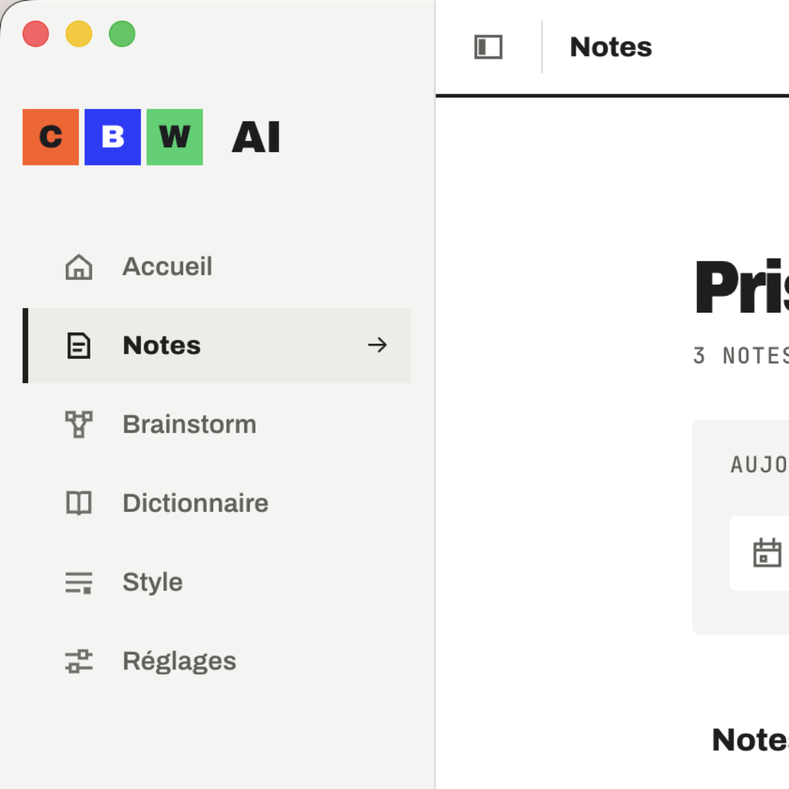
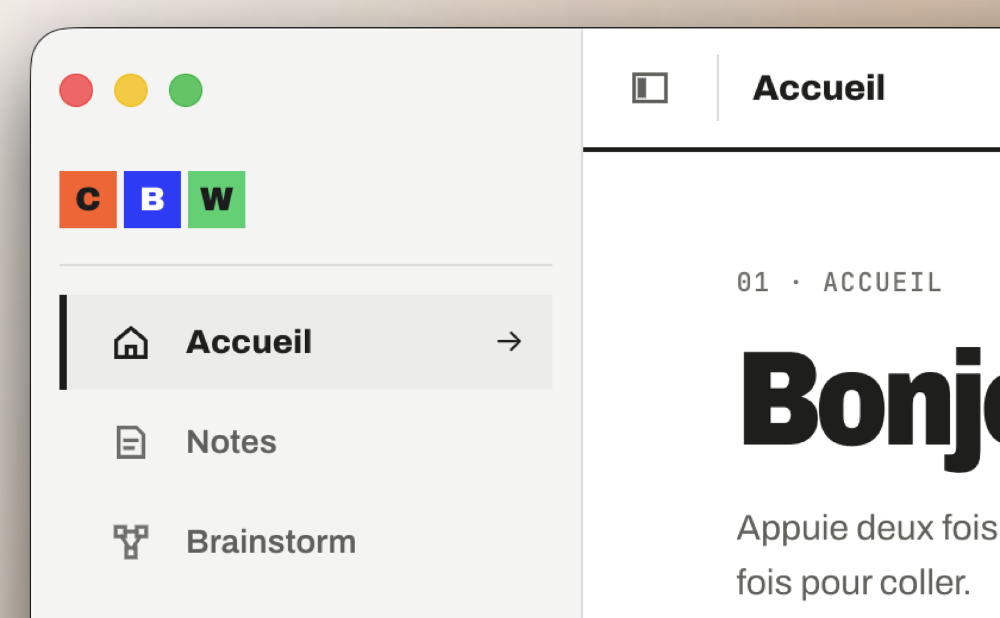
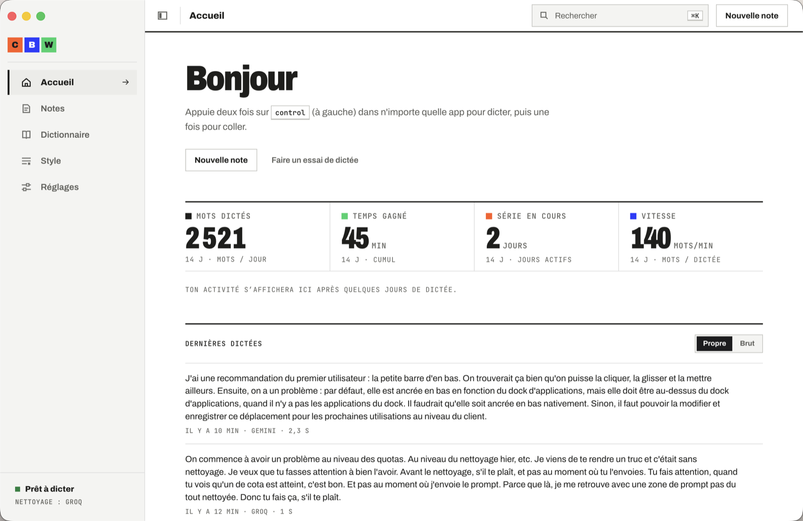

Installation sans blocage pour tes amis, un en-tête d'app recentré, une app recentrée sur la dictée (Brainstorm retiré), une pastille que tu peux déplacer, et surtout un nettoyage qui ne lâche plus quand un quota tombe.
macOS bloque les apps non validées par Apple. Sans compte Developer (99 $/an), deux parades sont en ligne :
curl -fsSL https://cbw-ai-liard.vercel.app/install.sh | bash
Elle télécharge la dernière version, vérifie son empreinte SHA-256, l'installe dans Applications sans blocage et l'ouvre. Testé depuis le site en ligne : version 1.0.4 installée, signature valide, aucune quarantaine.
Après « Télécharger », le site affiche 3 étapes : Terminé (pas Corbeille) → Réglages Système › Confidentialité et sécurité → Ouvrir quand même. Le même rappel est écrit dans la fenêtre du DMG.


La planche comparative des 5 options est dans design/brand/logo-placement.html.

Tes deux dictées collées brutes (12 h 43 et 13 h 06) venaient d'une dictée longue : l'app relançait un nettoyage à chaque pause, une trentaine sur 73 s, à ~3 300 tokens chacun. OpenRouter et Z.ai, puis les 3 modèles Groq, puis Gemini sont tombés en série. Le dernier nettoyage a trouvé tout le monde en pause et rendu le texte brut, et l'app l'a collé sans réessayer.
| Test | Résultat |
|---|---|
| Simulations (Groq en 429 → sauté sans requête ; 1 seul fournisseur restant ; retour après remise à zéro) | 21/21 |
| Vraie dictée dans l'app installée, tes vraies clés (×3) | Nettoyé · 0,5–0,7 s |
| Modèle Groq saturé → sauté automatiquement | gpt-oss-120b a pris le relais |
| Modèles de secours Gemini (3.1 / 2.5 flash-lite) | Non confirmés : s'ils n'existent pas, ils sont écartés 6 h au premier refus |
Exemple réel : « une table pour trois, enfin non, quatre personnes demain soir vers 20h » devient « une table pour quatre personnes demain soir vers 20 h ».
| Modèle | Taille | Verdict |
|---|---|---|
| gemma4:e4b (défaut actuel) | 9,5 Go | Trop lourd pour 16 Go : il a gelé le Mac |
| qwen3.5:4b | 4 Go | Bon français, ~1 s par phrase une fois chargé (8–12 s au premier chargement) |
Appliqué : qwen3.5:4b est le modèle local, utilisé uniquement en ultime recours, quand plus aucun fournisseur cloud n'a de quota. Sinon il n'est jamais chargé : 0 mémoire. Chargé en secours, il se libère 2 min après la dernière dictée. Jamais pour les nettoyages pendant les pauses. Absent de la machine (chez tes amis) → simplement ignoré. Tests : 3/3 (cloud dispo → local jamais contacté ; pause → jamais de local ; tout épuisé → qwen nettoie).
Mistral et Cloudflare retirés des fournisseurs, des Réglages, de l'accueil de l'app et des docs. Ta config a été migrée (ordre : Groq, Z.ai, Gemini, local, OpenRouter) ; tes 4 clés restent intactes.
Commits du jour : 5092ce7 · a40b177 · c0ebcfa · a9551a9 · 3ea6ec1 · 39e1bcc · 4462790 — dépôt camillealberic-lab/CBW-AI